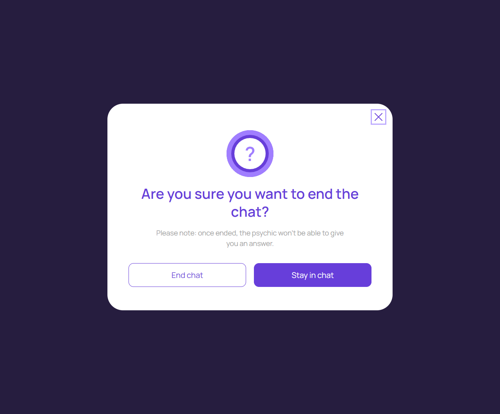

Подтверждение завершения
account/end-or-stay.html
Не перепутать закрытие окна и прекращение услуги.
| Когда открывается | End chat |
|---|---|
| Данные | sessionId/version; допустимое действие; запрос завершения. |
| Сценарий | Stay/Close возвращает активный чат без мутации; End отправляет один запрос завершения и ждет подтверждения. |
| Переходы | Активная консультация · Консультация завершена |
П03: немедленная остановка дальнейших начислений через безопасную паузу по клиентскому запросу, Complete оператором. Это предложение, не уже согласованная смена полномочий.
Общая и предметная логика. Снимки и подписи элементов — исходная редакция макета; поздние уточнения ТЗ имеют приоритет в своей области. Это не проверка текущего сайта.
Состояние 1280 · 1280 × 1062


Элементы и ожидаемые действия
| Элемент | Название в макете | Действие | Ожидаемый результат |
|---|---|---|---|
| E001 Виден | Close | Закрыть локальное окно или вернуться к инициатору; Stay отменяет намерение завершить. | Вернуть фокус и исходный контекст. Не выполнять оплату, удаление или Complete. При неизвестном результате платежа сначала сверить заказ. |
| E002 Виден | End chat | В активном чате открыть подтверждение; в end-or-stay отправить один запрос завершения. | П03: безопасная пауза начисления по запросу клиента, затем Complete оператором. До утверждения этого правила не подменять запрос мгновенным завершением. |
| E003 Виден | Stay in chat | Закрыть локальное окно или вернуться к инициатору; Stay отменяет намерение завершить. | Вернуть фокус и исходный контекст. Не выполнять оплату, удаление или Complete. При неизвестном результате платежа сначала сверить заказ. |
Состояние 390 · 390 × 1062

Элементы и ожидаемые действия
| Элемент | Название в макете | Действие | Ожидаемый результат |
|---|---|---|---|
| E001 Виден | Close | Закрыть локальное окно или вернуться к инициатору; Stay отменяет намерение завершить. | Вернуть фокус и исходный контекст. Не выполнять оплату, удаление или Complete. При неизвестном результате платежа сначала сверить заказ. |
| E002 Виден | End chat | В активном чате открыть подтверждение; в end-or-stay отправить один запрос завершения. | П03: безопасная пауза начисления по запросу клиента, затем Complete оператором. До утверждения этого правила не подменять запрос мгновенным завершением. |
| E003 Виден | Stay in chat | Закрыть локальное окно или вернуться к инициатору; Stay отменяет намерение завершить. | Вернуть фокус и исходный контекст. Не выполнять оплату, удаление или Complete. При неизвестном результате платежа сначала сверить заказ. |